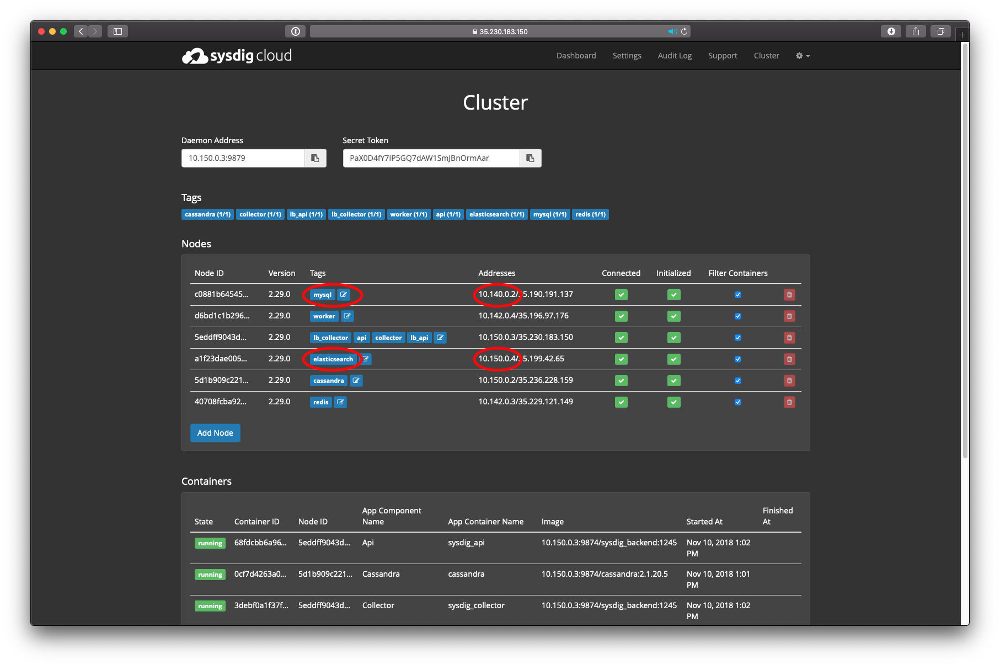

Migration Tool for Unified Events (Platform v. 1149+)
A change was introduced in how events are indexed and stored in version 1149 of the Sysdig platform.
Prior to this version, the three types of events were stored in three separate indexes, based on their different sources:
Alert events: stored in MySQL (
alert_notificationstable)Custom events (from both the infrastructure components and any custom event integrations): stored in ElasticSearch (
events_v1index)Policy events (from Sysdig Secure): stored in ElasticSearch (
policy_event_v1index)
With version 1149 , they will be combined in one index.
The Unified Events migration tool is delivered as a Docker container and is used to migrate events from multiple sources to a single source. When the migration and upgrade are complete, you manually terminate the migration tool.
Warning
It is highly recommended to run the migration tool BEFORE launching the upgrade to version 1149.
If you do not migrate before upgrading, you will lose visibility to old custom events in the Sysdig Monitor UI.
Prerequisites
You must be running Sysdig platform version 1091 . If your on-premises version is less than 1091, upgrade appropriately before running the migration tool.
Warning
It is highly recommended to follow upgrade best practices:
Keep upgrades current
Upgrade progressively without skipping versions, and
Test upgrades in a non-mission-critical or staging environment before rolling in to production.
The migration tool container must have network visibility to the data sources used for re-indexing: MySQL and ElasticSearch.
Launch migration before upgrading to version 1149.
Where to Find the Tool
The migration tool is provided as a containerized JavaApp on a public Quay repository. The Kubernetes and Replicated steps below give the precise location.
Running the Migration
Since events are constantly being generated, the migration tool executes the migration in batches. After each batch is indexed, the tool will try to fetch the next one, with a predefined cutoff.
When the tool finishes indexing old events and has begun to wait for new ones, the Sysdig application upgrade can be launched. In the background, during the upgrade, the tool ensures that incoming events in old indexes are properly reindexed to the new unified table.
The migration steps are:
Run the container image.
Monitor the logs to see when old events have finished migrating.
Launch the upgrade.
Terminate the migration tool manually.
Depending on your environment, follow the:
Kubernetes Steps
Replicated Steps
Kubernetes Steps
1. Run the Container Image (K8s)
Run the following command:
kubectl -n sysdigcloud create -f MIGRATION_TOOL_SPECS.yaml
Where MIGRATION_TOOL_SPECS is defined as follows.
(You can obtain the .yaml template from GitHub repository or copy/paste it from this document. )
---
apiVersion: v1
kind: Pod
metadata:
labels:
app: sysdigcloud
role: event-migration
name: sysdig-event-migration
spec:
containers:
- name: event-migration
image: quay.io/sysdig/onprem_migration:combined-events_0.1.0_1091-1149
env:
- name: DB_ENDPOINT
valueFrom:
configMapKeyRef:
name: sysdigcloud-config
key: mysql.endpoint
- name: DB_CONNECTION_TIMEOUT
value: "4000" # Tweak parameter if necessary
- name: DB_SOCKET_TIMEOUT
value: "14000" # Tweak parameter if necessary
- name: DB_USER
valueFrom:
configMapKeyRef:
name: sysdigcloud-config
key: mysql.user
- name: DB_PASSWORD
valueFrom:
configMapKeyRef:
name: sysdigcloud-config
key: mysql.password
- name: ES_ENDPOINT
valueFrom:
configMapKeyRef:
name: sysdigcloud-config
key: elasticsearch.url
- name: ES_PORT
value: "9200" # Change this param if different
- name: BATCH_SIZE
value: "500"
- name: ALERT_EVENTS
value: "true"
- name: CUSTOM_EVENTS
value: "true"
- name: POLICY_EVENTS
value: "true"
- name: ONPREM
value: "true"
- name: REPAIR_MODE
value: "false"Sample logger output:
2018-07-26 10:42:49.129 INFO 8 --- [ main] com.sysdig.EventMigration : Started EventMigration in 21.956 seconds (JVM running for 23.097) 2018-07-26 10:42:49.130 INFO 8 --- [ main] com.sysdig.EventMigration : ====================== Onprem ====================== 2018-07-26 10:42:49.131 INFO 8 --- [ main] com.sysdig.EventMigration : * DB Settings 2018-07-26 10:42:49.131 INFO 8 --- [ main] com.sysdig.EventMigration : * -- Connection Endpoint: mysql-master.staging.sysdigcloud.com 2018-07-26 10:42:49.131 INFO 8 --- [ main] com.sysdig.EventMigration : * -- Connection Timeout: 4000 2018-07-26 10:42:49.131 INFO 8 --- [ main] com.sysdig.EventMigration : * -- Socket Timeout: 15000 2018-07-26 10:42:49.132 INFO 8 --- [ main] com.sysdig.EventMigration : * -- Username: admin 2018-07-26 10:42:49.132 INFO 8 --- [ main] com.sysdig.EventMigration : * -- Password: ********* 2018-07-26 10:42:49.132 INFO 8 --- [ main] com.sysdig.EventMigration : * 2018-07-26 10:42:49.134 INFO 8 --- [ main] com.sysdig.EventMigration : * ES Settings 2018-07-26 10:42:49.134 INFO 8 --- [ main] com.sysdig.EventMigration : * -- Endpoint Url: http://localhost 2018-07-26 10:42:49.134 INFO 8 --- [ main] com.sysdig.EventMigration : * -- Endpoint Port: 9200 2018-07-26 10:42:49.139 INFO 8 --- [ main] com.sysdig.EventMigration : * 2018-07-26 10:42:49.139 INFO 8 --- [ main] com.sysdig.EventMigration : * Migration Settings 2018-07-26 10:42:49.139 INFO 8 --- [ main] com.sysdig.EventMigration : * -- Batch Size: 250 2018-07-26 10:42:49.139 INFO 8 --- [ main] com.sysdig.EventMigration : * 2018-07-26 10:42:49.139 INFO 8 --- [ main] com.sysdig.EventMigration : * Active Migrations 2018-07-26 10:42:49.140 INFO 8 --- [ main] com.sysdig.EventMigration : * -- custom-events 2018-07-26 10:42:49.141 INFO 8 --- [ main] com.sysdig.EventMigration : * -- alert-events 2018-07-26 10:42:49.141 INFO 8 --- [ main] com.sysdig.EventMigration : * -- policy-events 2018-07-26 10:42:49.141 INFO 8 --- [ main] com.sysdig.EventMigration : * 2018-07-26 10:42:49.141 INFO 8 --- [ main] com.sysdig.EventMigration : * Migration is running in NORMAL mode 2018-07-26 10:42:49.141 INFO 8 --- [ main] com.sysdig.EventMigration : ================================================== 2018-07-26 10:42:49.158 INFO 8 --- [ main] com.sysdig.services.MigrationService : --- Executing alertEventMigration --- 2018-07-26 10:42:51.499 INFO 8 --- [ main] c.s.m.events.AlertEventMigration : Starting from id 0 2018-07-26 10:42:51.681 INFO 8 --- [ main] c.s.m.events.AlertEventMigration : Event count to be migrated: 8251
2. Watch the Migration Logs (K8s)
Run a command to tail the logs so you can see when old events have finished migrating:
kubectl -n sysdigcloud logs -f sysdig-event-migration
The tool will begin to migrate old events:
2018-07-25 09:58:50.806 INFO 7 --- [ main] c.s.m.events.AlertEventMigration : Indexed 250 events; latest id is 133932 2018-07-25 09:58:52.343 INFO 7 --- [ main] c.s.m.events.AlertEventMigration : Indexed 250 events; latest id is 134182 2018-07-25 09:58:54.091 INFO 7 --- [ main] c.s.m.events.AlertEventMigration : Indexed 250 events; latest id is 134432 2018-07-25 09:58:56.114 INFO 7 --- [ main] c.s.m.events.AlertEventMigration : Indexed 250 events; latest id is 134682 2018-07-25 09:58:57.776 INFO 7 --- [ main] c.s.m.events.AlertEventMigration : Indexed 250 events; latest id is 134932 2018-07-25 09:58:59.161 INFO 7 --- [ main] c.s.m.events.AlertEventMigration : Indexed 250 events; latest id is 135182 2018-07-25 09:59:00.649 INFO 7 --- [ main] c.s.m.events.AlertEventMigration : Indexed 250 events; latest id is 135432 2018-07-25 09:59:01.994 INFO 7 --- [ main] c.s.m.events.AlertEventMigration : Indexed 250 events; latest id is 135682
When complete, it will be begin to check for new events in 1-minute intervals:
2018-07-25 09:59:44.206 INFO 7 --- [ main] c.s.m.events.AlertEventMigration : No more alert_event to migrate... 2018-07-25 09:59:48.293 INFO 7 --- [ main] com.sysdig.services.MigrationService : Let's sleep for 1 minute before continue
At this point you can launch the upgrade to version 1149. The migration tool continues to run.
3. Upgrade the Sysdig Platform (K8s)
Check the Release Notes.
Follow the process to Basic Upgrade Kubernetes Installations.
During upgrade, the tool will check periodically for new events.
Logger output:
2018-07-25 10:00:48.294 INFO 7 --- [ main] com.sysdig.services.MigrationService : --- Checking for new events --- 2018-07-25 10:00:48.295 INFO 7 --- [ main] com.sysdig.services.MigrationService : --- Executing alertEventMigration --- 2018-07-25 10:00:48.422 INFO 7 --- [ main] c.s.m.events.AlertEventMigration : Starting from id 141933 2018-07-25 10:00:48.606 INFO 7 --- [ main] c.s.m.events.AlertEventMigration : Event count to be migrated: 0 2018-07-25 10:00:48.731 INFO 7 --- [ main] c.s.m.events.AlertEventMigration : No more alert_event to migrate... 2018-07-25 10:00:48.731 INFO 7 --- [ main] com.sysdig.services.MigrationService : --- Executing policyEventMigration --- 2018-07-25 10:00:48.860 INFO 7 --- [ main] c.s.m.events.PolicyEventMigration : Starting from id 567685605761232896 2018-07-25 10:00:49.168 INFO 7 --- [ main] c.s.m.events.PolicyEventMigration : Event count to be migrated: 0 2018-07-25 10:00:49.484 INFO 7 --- [ main] c.s.m.events.PolicyEventMigration : No more policy_event to migrate... 2018-07-25 10:00:49.484 INFO 7 --- [ main] com.sysdig.services.MigrationService : --- Executing customEventMigration --- 2018-07-25 10:00:49.607 INFO 7 --- [ main] c.s.m.events.CustomEventMigration : Starting from id 0 2018-07-25 10:00:49.882 INFO 7 --- [ main] c.s.m.events.CustomEventMigration : Event count to be migrated: 0 2018-07-25 10:00:50.148 INFO 7 --- [ main] c.s.m.events.CustomEventMigration : No more custom_event to migrate... 2018-07-25 10:00:50.148 INFO 7 --- [ main] com.sysdig.services.MigrationService : Let's sleep for 1 minute before continue
4. Terminate the Migration Tool (K8s)
When the Sysdig platform update is complete, leave the migration tool running for at least 3 minutes.
To verify that the process is complete, check in the logs that custom events are no longer migrating. Sample output:
2018-07-25 10:00:49.484 INFO 7 --- [ main] com.sysdig.services.MigrationService : --- Executing customEventMigration --- 2018-07-25 10:00:49.607 INFO 7 --- [ main] c.s.m.events.CustomEventMigration : Starting from id 0 2018-07-25 10:00:49.882 INFO 7 --- [ main] c.s.m.events.CustomEventMigration : Event count to be migrated: 0 2018-07-25 10:00:50.148 INFO 7 --- [ main] c.s.m.events.CustomEventMigration : No more custom_event to migrate...
Then terminate the migration tool by running the following command:
kubectl -n sysdigcloud delete -f {migration_tool_specs}.yamlMigration and upgrade are complete.
If necessary, check the Troubleshooting tips, below.
Replicated Steps
If your environment is airgapped, you need to create an "image" of the migration tool that can be used on an airgapped install. Otherwise, proceed with 1. Run the Container Image.
Prerequisite for Airgapped Environments
Pull the image onto a host that has access to the Internet:
docker pull quay.io/sysdig/onprem_migration:combined-events_0.1.0_1091-1149
Save the downloaded image to a TAR file:
docker save -o migrate.tar quay.io/sysdig/onprem_migration
Move the image TAR to the airgapped machine and deploy the image:
docker load -i migrate.tar
Continue with the Replicated steps, below.
1. Run the Container Image (Replicated)
Ensure that the container has network visibility to the MySQL and ElasticSearch components.
Run the migration tool container on a Coordinating Replicated Node, and run the container using the private addresses of data source endpoints.
Note
The data source endpoints can be found on the Replicated Dashboard, in Cluster settings.
Other parameters, such as DB usernames, can be found in the Settings section of the Replicated Dashboard console.
NOTE: The MySQL password was set when the Sysdig back end was installed using Replicated. The administrator needed to save and remember the DB passwords that were set, as they are not visible in the Replicated console.

Execute the following Docker run command, providing the values described in the Appendix - Migration Tool Container Parameters.
In Docker command format:
docker run -d --name sysdig-event-migration -e DB_ENDPOINT=10.111.0.1 -e DB_CONNECTION_TIMEOUT=4000 -e DB_SOCKET_TIMEOUT=12000 -e DB_USER=root -e DB_PASSWORD=<password> -e BATCH_SIZE=350 -e ES_ENDPOINT=http://10.111.0.1 -e ALERT_EVENTS=true -e CUSTOM_EVENTS=true -e POLICY_EVENTS=true -e REPAIR_MODE=false -e ONPREM=true quay.io/sysdig/onprem_migration:combined-events_0.1.0_1091-1149
With annotations for
docker run -d --name sysdig-event-migration \
-e DB_ENDPOINT=<mysql_url> \ # <mysql_url> should be address without protocol defined (e.g. without 'http://')
-e DB_CONNECTION_TIMEOUT=<connection_timeout> \
-e DB_SOCKET_TIMEOUT=<socket_timeout> \
-e DB_USER=<user_name> \
-e DB_PASSWORD=<password> \
-e BATCH_SIZE=<batch_size> \
-e ES_ENDPOINT=<elasticsearch_endpoint> \ # <elasticsearch_endpoint> should be address with protocol defined (e.g.with 'http://')
-e ES_PORT=<elasticsearch_port> \ # Default port is 9200, needs to be changed in case of custom value
-e ALERT_EVENTS=true \
-e CUSTOM_EVENTS=true \
-e POLICY_EVENTS=true \
-e REPAIR_MODE=false \
-e ONPREM=true \
quay.io/sysdig/onprem_migration:combined-events_0.1.0_1091-1149 Sample logger output:
2018-07-26 10:42:49.129 INFO 8 --- [ main] com.sysdig.EventMigration : Started EventMigration in 21.956 seconds (JVM running for 23.097) 2018-07-26 10:42:49.130 INFO 8 --- [ main] com.sysdig.EventMigration : ====================== Onprem ====================== 2018-07-26 10:42:49.131 INFO 8 --- [ main] com.sysdig.EventMigration : * DB Settings 2018-07-26 10:42:49.131 INFO 8 --- [ main] com.sysdig.EventMigration : * -- Connection Endpoint: mysql-master.staging.sysdigcloud.com 2018-07-26 10:42:49.131 INFO 8 --- [ main] com.sysdig.EventMigration : * -- Connection Timeout: 4000 2018-07-26 10:42:49.131 INFO 8 --- [ main] com.sysdig.EventMigration : * -- Socket Timeout: 15000 2018-07-26 10:42:49.132 INFO 8 --- [ main] com.sysdig.EventMigration : * -- Username: admin 2018-07-26 10:42:49.132 INFO 8 --- [ main] com.sysdig.EventMigration : * -- Password: ********* 2018-07-26 10:42:49.132 INFO 8 --- [ main] com.sysdig.EventMigration : * 2018-07-26 10:42:49.134 INFO 8 --- [ main] com.sysdig.EventMigration : * ES Settings 2018-07-26 10:42:49.134 INFO 8 --- [ main] com.sysdig.EventMigration : * -- Endpoint Url: http://localhost 2018-07-26 10:42:49.134 INFO 8 --- [ main] com.sysdig.EventMigration : * -- Endpoint Port: 9200 2018-07-26 10:42:49.139 INFO 8 --- [ main] com.sysdig.EventMigration : * 2018-07-26 10:42:49.139 INFO 8 --- [ main] com.sysdig.EventMigration : * Migration Settings 2018-07-26 10:42:49.139 INFO 8 --- [ main] com.sysdig.EventMigration : * -- Batch Size: 250 2018-07-26 10:42:49.139 INFO 8 --- [ main] com.sysdig.EventMigration : * 2018-07-26 10:42:49.139 INFO 8 --- [ main] com.sysdig.EventMigration : * Active Migrations 2018-07-26 10:42:49.140 INFO 8 --- [ main] com.sysdig.EventMigration : * -- custom-events 2018-07-26 10:42:49.141 INFO 8 --- [ main] com.sysdig.EventMigration : * -- alert-events 2018-07-26 10:42:49.141 INFO 8 --- [ main] com.sysdig.EventMigration : * -- policy-events 2018-07-26 10:42:49.141 INFO 8 --- [ main] com.sysdig.EventMigration : * 2018-07-26 10:42:49.141 INFO 8 --- [ main] com.sysdig.EventMigration : * Migration is running in NORMAL mode 2018-07-26 10:42:49.141 INFO 8 --- [ main] com.sysdig.EventMigration : ================================================== 2018-07-26 10:42:49.158 INFO 8 --- [ main] com.sysdig.services.MigrationService : --- Executing alertEventMigration --- 2018-07-26 10:42:51.499 INFO 8 --- [ main] c.s.m.events.AlertEventMigration : Starting from id 0 2018-07-26 10:42:51.681 INFO 8 --- [ main] c.s.m.events.AlertEventMigration : Event count to be migrated: 8251
2. Watch the Migration Logs (Replicated)
Run a command to tail the logs so you can see when old events have finished migrating:
docker logs -f sysdig-event-migration
The tool will begin to migrate old events:
2018-07-25 09:58:50.806 INFO 7 --- [ main] c.s.m.events.AlertEventMigration : Indexed 250 events; latest id is 133932 2018-07-25 09:58:52.343 INFO 7 --- [ main] c.s.m.events.AlertEventMigration : Indexed 250 events; latest id is 134182 2018-07-25 09:58:54.091 INFO 7 --- [ main] c.s.m.events.AlertEventMigration : Indexed 250 events; latest id is 134432 2018-07-25 09:58:56.114 INFO 7 --- [ main] c.s.m.events.AlertEventMigration : Indexed 250 events; latest id is 134682 2018-07-25 09:58:57.776 INFO 7 --- [ main] c.s.m.events.AlertEventMigration : Indexed 250 events; latest id is 134932 2018-07-25 09:58:59.161 INFO 7 --- [ main] c.s.m.events.AlertEventMigration : Indexed 250 events; latest id is 135182 2018-07-25 09:59:00.649 INFO 7 --- [ main] c.s.m.events.AlertEventMigration : Indexed 250 events; latest id is 135432 2018-07-25 09:59:01.994 INFO 7 --- [ main] c.s.m.events.AlertEventMigration : Indexed 250 events; latest id is 135682
When complete, it will be begin to check for new events in 1-minute intervals:
2018-07-25 09:59:44.206 INFO 7 --- [ main] c.s.m.events.AlertEventMigration : No more alert_event to migrate... 2018-07-25 09:59:48.293 INFO 7 --- [ main] com.sysdig.services.MigrationService : Let's sleep for 1 minute before continue
At this point you can launch the upgrade to version 1149. The migration tool continues to run.
3. Upgrade the Sysdig Platform (Replicated)
Check the Release Notes.
Follow the process to Upgrade Replicated Installations.
During upgrade, the tool will check periodically for new events.
Note
In Replicated, the upgrade requires ElasticSearch and MySQL servers to be restarted, so you will experience connection loss during upgrade. The migration tool is designed to handle this gracefully, so connection loss WARN messages in logs are expected and not a problem with the migration.
Replicated logger output (note the WARN messages):
... 2018-08-07 12:24:19.659 INFO 8 --- [ main] c.s.m.events.AlertEventMigration : Indexed 300 events; latest id is 1600306 2018-08-07 12:24:34.703 INFO 8 --- [ main] o.s.b.f.xml.XmlBeanDefinitionReader : Loading XML bean definitions from class path resource [org/springframework/jdbc/support/sql-error-codes.xml] 2018-08-07 12:24:34.813 INFO 8 --- [ main] o.s.jdbc.support.SQLErrorCodesFactory : SQLErrorCodes loaded: [DB2, Derby, H2, HDB, HSQL, Informix, MS-SQL, MySQL, Oracle, PostgreSQL, Sybase] 2018-08-07 12:24:39.182 WARN 8 --- [ main] com.sysdig.services.MigrationService : Connection with MySQL has been lost: Communications link failure 2018-08-07 12:24:40.803 INFO 8 --- [ main] com.sysdig.services.MigrationService : Let's sleep for 1 minute before continue 2018-08-07 12:25:40.734 INFO 8 --- [ main] com.sysdig.services.MigrationService : --- Checking for events to migrate --- 2018-08-07 12:25:40.736 INFO 8 --- [ main] com.sysdig.services.MigrationService : --- Executing alertEventMigration --- 2018-08-07 12:25:41.000 INFO 8 --- [ main] c.s.m.events.AlertEventMigration : Starting from id 1600306 2018-08-07 12:25:41.363 INFO 8 --- [ main] c.s.m.events.AlertEventMigration : Event count to be migrated: 455573 2018-08-07 12:25:42.106 WARN 8 --- [ main] com.sysdig.services.MigrationService : Connection with ES has been lost: Could not connect to http://host.docker.internal:9200 2018-08-07 12:25:42.107 INFO 8 --- [ main] com.sysdig.services.MigrationService : --- Executing policyEventMigration --- 2018-08-07 12:25:42.240 INFO 8 --- [ main] c.s.m.events.PolicyEventMigration : Starting from id 0 2018-08-07 12:25:42.243 WARN 8 --- [ main] c.s.m.events.PolicyEventMigration : Error during data fetch from ES, due to: Could not connect to http://host.docker.internal:9200 2018-08-07 12:25:42.246 WARN 8 --- [ main] com.sysdig.services.MigrationService : Connection with ES has been lost: Could not connect to http://host.docker.internal:9200 2018-08-07 12:25:42.247 INFO 8 --- [ main] com.sysdig.services.MigrationService : --- Executing customEventMigration --- 2018-08-07 12:25:42.384 INFO 8 --- [ main] c.s.m.events.CustomEventMigration : Starting from id 569942131465043968 2018-08-07 12:25:42.386 WARN 8 --- [ main] c.s.m.events.CustomEventMigration : Error during data fetch from ES, due to: Could not connect to http://host.docker.internal:9200 2018-08-07 12:25:42.389 WARN 8 --- [ main] com.sysdig.services.MigrationService : Connection with ES has been lost: Could not connect to http://host.docker.internal:9200 2018-08-07 12:25:42.389 INFO 8 --- [ main] com.sysdig.services.MigrationService : Let's sleep for 1 minute before continue 2018-08-07 12:26:42.320 INFO 8 --- [ main] com.sysdig.services.MigrationService : --- Checking for events to migrate --- 2018-08-07 12:26:42.321 INFO 8 --- [ main] com.sysdig.services.MigrationService : --- Executing alertEventMigration --- 2018-08-07 12:26:42.584 INFO 8 --- [ main] c.s.m.events.AlertEventMigration : Starting from id 1600306 2018-08-07 12:26:42.923 INFO 8 --- [ main] c.s.m.events.AlertEventMigration : Event count to be migrated: 455578 2018-08-07 12:26:44.404 INFO 8 --- [ main] c.s.m.events.AlertEventMigration : Indexed 300 events; latest id is 1600606
4. Terminate the Migration Tool (Replicated)
When the Sysdig platform update is complete, leave the migration tool running for at least 3 minutes.
To verify that the process is complete, check in the logs that custom events are no longer migrating.
Sample output:
2018-07-25 10:00:49.484 INFO 7 --- [ main] com.sysdig.services.MigrationService : --- Executing customEventMigration --- 2018-07-25 10:00:49.607 INFO 7 --- [ main] c.s.m.events.CustomEventMigration : Starting from id 0 2018-07-25 10:00:49.882 INFO 7 --- [ main] c.s.m.events.CustomEventMigration : Event count to be migrated: 0 2018-07-25 10:00:50.148 INFO 7 --- [ main] c.s.m.events.CustomEventMigration : No more custom_event to migrate...
Then terminate the migration tool, by running the following command:
docker stop sysdig-event-migration docker rm sysdig-event-migration
Migration and upgrade are complete.
If necessary, check the Troubleshooting tips, below.
Troubleshooting
In rare cases, migration errors can occur due to incorrect container configuration, network latency, or temporary cluster overload.
Note
Temporary connection-loss errors in Replicated are expected and are not migration errors, as described in Upgrade the Sysdig Platform (Replicated)
Migration Startup Errors
Startup errors are normally due to incorrect environment variable settings.
Check URL endpoints, passed credentials, flags, etc.
Migration Process Errors
If you were able to run migration successfully, it functioned for a while, and then began to experience errors, this is most likely caused by network latency or cluster overload. In these cases, the migration tool will try to reduce the pressure on the cluster by reducing batch size exponentially, with a predefined backoff wait time.
Ultimately, if events cannot be indexed, the migration tool will skip the issued batch and try to index the next batch. Information about the failed batch will be stored in the MySQL table utility_metadata.
Temporary Errors
If errors are only temporary, simply proceed with Running the Migration Steps.
When migration is complete, run the migration container again with the
-e REPAIR_MODE=trueparameter. This will index all failed migrations stored in the MySQL tableutility_metadata.
Continuous Errors
At this point, abort the migration attempt. Check the number of errors to decide how to proceed.
To do so, check the MySQL table with:
SELECT COUNT(*) FROM utility_metadata WHERE metadata_id LIKE 'failure-%';
LOW Error Count (0 - 1000)
Try to identify why errors started (i.e. temporary cluster overload), resolve the problem and re-run the migration.
When migration is complete, run the migration container again with the
-e REPAIR_MODE=trueparameter. This will index all failed migrations stored in the MySQL tableutility_metadata.
HIGH Error Count (10,000+)
Try to identify why errors started (i.e. temporary cluster overload), resolve the problem, and RESET the migration progress completely by clearing all content from the MySQL table
utility_metadata.(e.g.
DELETE FROM utility_metadata;)Repeat Running the Migration Steps.
Appendix - Migration Tool Container Parameters
All parameters are defined as environment variables.
Env Param | Required | Type | Description | Example | Recommended values |
|---|---|---|---|---|---|
DB_ENDPOINT | true | string | Defined database connection endpoint | Do NOT include the protocol (e.g. https://) in the endpoint entry | |
DB_CONNECTION_TIMEOUT | false | int | Defined connection timeout period | 5000 | Default value if not set is |
DB_SOCKET_TIMEOUT | false | int | Defined socket timeout period | 300000 | Default value if not set is |
DB_USER | true | string | Defined database username | root | / |
DB_PASSWORD | false | string | Defined database password | pass | / |
ES_ENDPOINT | true | string | ElasticSearch endpoint | Include the protocol (e.g http://) in the endpoint entry | |
ES_PORT | false | int | ElasticSearch port | 9200 | If there is no LB in front of the cluster it should be |
BATCH_SIZE | false | int | Size of indexing event batch | 500 | Default value if not set is |
ALERT_EVENTS | one of | boolean | Simple options that specify which migrations should be executed. At least one of them must be provided | / | Default value if not set is |
CUSTOM_EVENTS | one of | boolean | |||
POLICY_EVENTS | one of | boolean | |||
ONPREM | false | boolean | Specify whether this is migration executed in on-premise environment | true | All onpremise migrations should have this option set to |
REPAIR_MODE | false | boolean | Specify that migration will be running repair mode | true | This should be only used in case of errors during migrations (explained in following sections), default |